The Treasure of Old Lille
Discover the biggest treasure of Lille through a scavenger game in the Old Lille!
Easy
3-4h
Discover the biggest treasure of Lille through a scavenger game in the Old Lille!
Discover the history of Old Lille, its secrets, its monuments, and its famous places.
You can use a geolocation application (Google Maps, Plans, etc.). Take your time: visit, discover, taste...
Find the solution on the back of each card, with the story of the place, and the next riddle.
A certain "Fred" is said to have hidden a priceless treasure in Old Lille. This treasure is said to be revealed in a secret parchment.
To find it, he leaves you a strange first clue: a golden arm.
But where could it be?
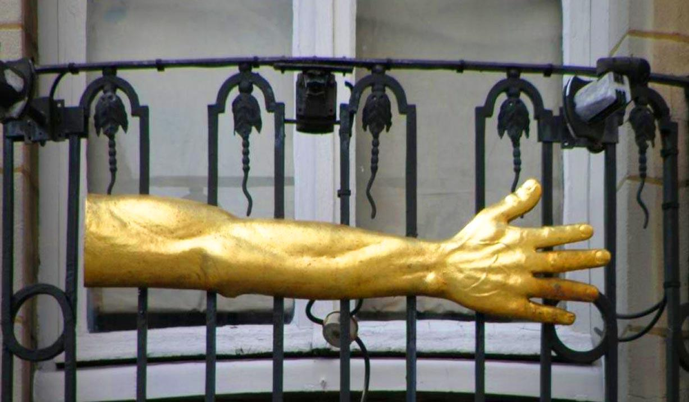 I found it!1 rue de la Grande Chaussée
This 17th-century sculpture is a long mystery of Lille: is it the former insignia of a fencing master? The sign of a glove maker's shop? An indication of the direction of Rue de la Monnaie?
Discover its historyHanging from this mysterious golden arm, you find an excerpt from a newspaper article. It appears to contain letters surrounded by circles.
Could a secret message be hidden within?
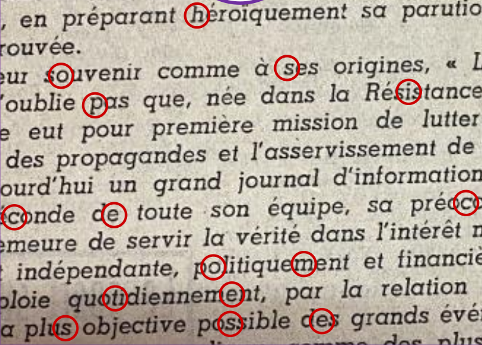 I found it!
32 rue de la Monnaie
Founded in 1237 by Joan of Constantinople, this Historic Monument, listed in 1923, is today a museum exhibiting paintings of the history of Lille in the 17th and 18th centuries.
Discover its historyAt the reception desk of this old hospice, you're told that this "Fred" is none other than "Fred the Marvelous", someone particularly well-known in Lille for his pastries.
Where could he be?
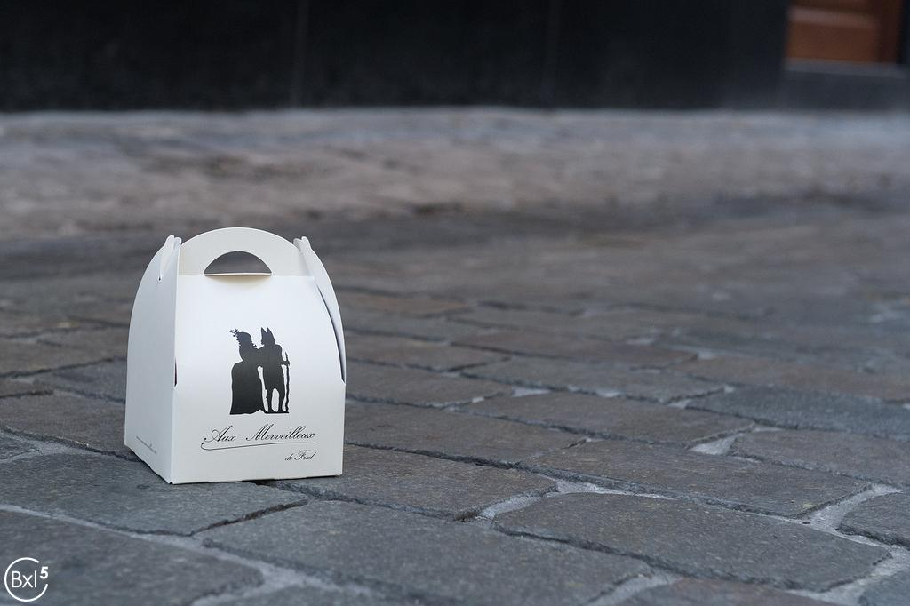 I found it!67 rue de la Monnaie
In the 1980s, Frédéric Vaucamps, a pastry chef from the North of France, revisited his favorite cake. In 1997, he named his shop in Lille after his cake.
Discover its historyThe pastry shop is in disarray, and there's no sign of Fred. Amidst all this chaos, one detail surprises you: a basket of onions. Weird for a pastry shop...
Could it be a reference to a place of the same name?
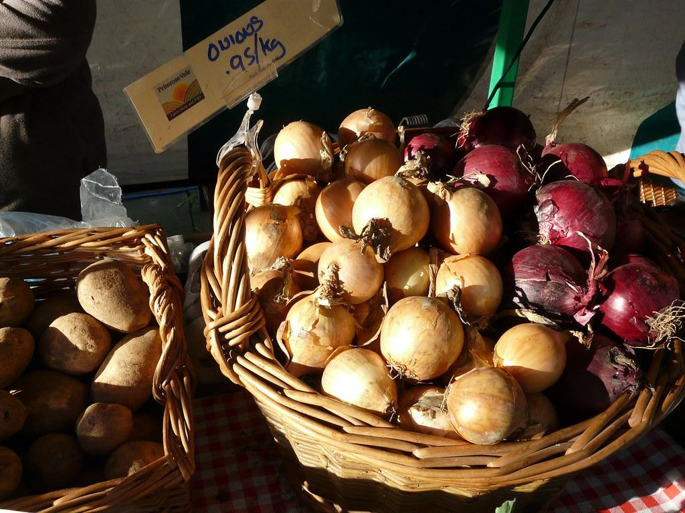 I found it!Place aux Oignons
The name of this place is said to be a deformation of the Latin “dominium” (dungeon), then “dominion”, before a final deformation giving it its current name.
Discover its historyYou find Fred on the ground. Before passing out, he hands you a photo he snatched from his attacker: an icon of the Virgin Mary.
Where could his attacker have fled to?
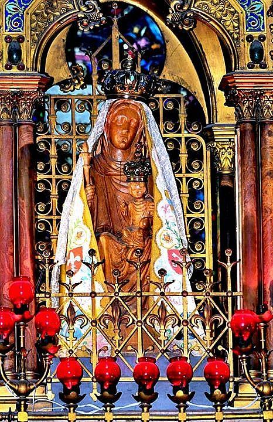 I found it!Place Gilleson
The construction of this religious site was often interrupted, notably by the First World War. Its façade, completed in the late 1990s, stands out from the rest of the monument.
Discover its historyThe cathedral is empty. Near the altar, you find a Bible on the ground. It contains a letter addressed to the abbot. Strange, the address has been changed...
Where was this letter supposed to be addressed?
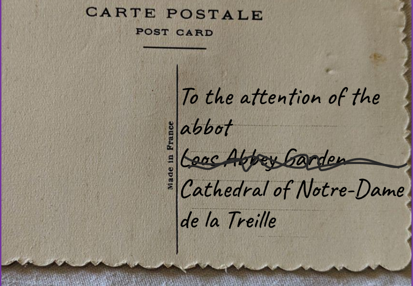 I found it!9-11 rue des 3 Molettes
Donated by the Lord of Roubaix to the monks of Loos Abbey, this refuge became the town house of the monks of Loos. Its facades were listed as Historic Monuments in 1980.
Discover its historyYou catch the priest burning a piece of paper before fleeing. You manage to save the paper: it's an old Illustration.
Did he try to burn the paper so no one would find out where he was going?
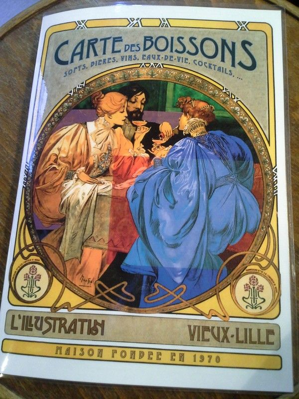 I found it!18 rue Royale
This bar is located on a street known to young people in Lille as one of the “thirst streets”, in addition to Solférino and Masséna streets, which are popular for their bars and nightclubs.
Discover its historyYou find the alb abandoned on the ground; it was clearly a fake priest. A man at the bar claims to have recognized him: he used to fish with him at the "Quai du Haut".
Hmmm, that name doesn't ring a bell. Did he pronounce it wrong?
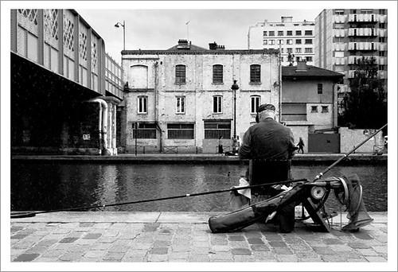 I found it!Quai du Wault
Formerly located at the place called “Wault” during the 13th century, it is one of the two old ports of Lille opening onto the Haute-Deûle, located at the time inside the fortified walls.
Discover its historyIn the mist, you hear a lullaby with strange lyrics that seems to come from a statue of a woman cradling her child.
Is it a mirage? How can a statue sing a lullaby? You must go check it out!
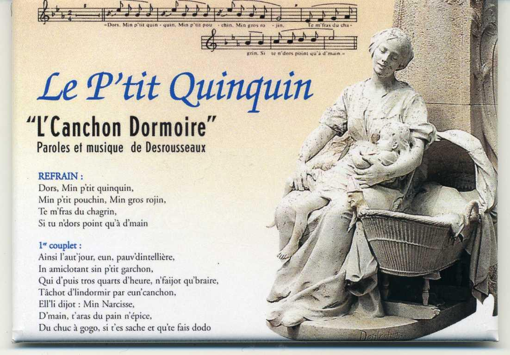 I found it!Rue Nationale
Written in 1853 in Ch'ti, this lullaby illustrates the life of working-class families in the North in the 19th century. Its statue, created in 1902 by Eugène Deplechin, represents a lacemaker.
Discover its historyHidden behind the statue, you find an elegant box, richly decorated. It contains filled waffles.
Has our fugitive been feeling peckish? It's certainly a clue to finding him!
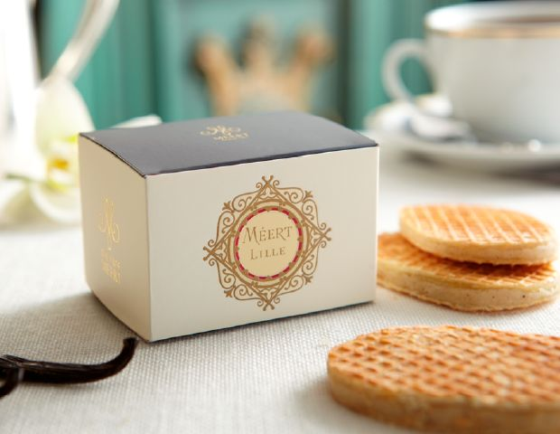 I found it!25-27 rue Esquermoise
Founded in 1761, this is the oldest pastry shop in the world! This Historic Monument has seen famous figures such as Napoleon, Winston Churchill, and General de Gaulle.
Discover its historyYou find the fugitive! He narrowly escapes, but you manage to snatch something from his pocket: an Old Purse overflowing with ancient coins.
He can't be far away, this purse must have been useful to him.
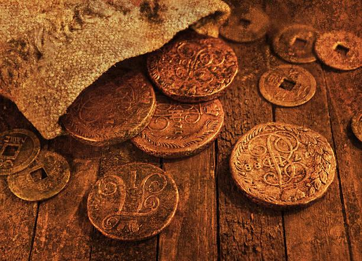 I found it!Place du Général de Gaulle
Built in 1653 under Spanish sovereignty, this Historic Monument welcomes booksellers, chess players and even tango dancers on summer Sundays.
Discover its historyThe fugitive found the parchment before you did, and burned it so no one else could read it! But a black and white engraving miraculously escaped the flames.
What cultural landmark does this engraving remind you of?
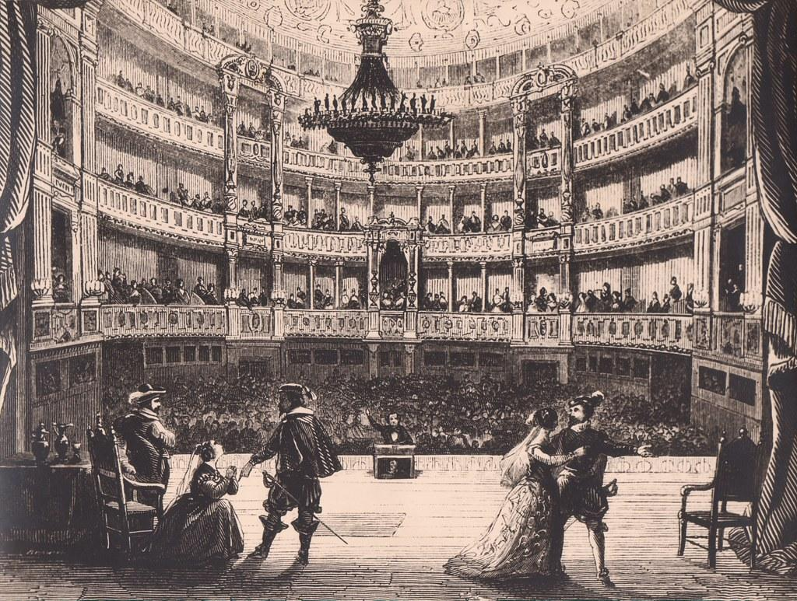 I found it!Place du Théâtre
The construction of this cultural monument, at the beginning of the 20th century, was won thanks to a bluff by its architect Louis-Marie Cordonnier.
Discover its historyYou finally catch the fugitive, but he's confused. When you question him about the parchment, his speech is incoherent: he talks about a "promise", a gold mill, corsets, and cannonballs...
What could he possibly have meant?
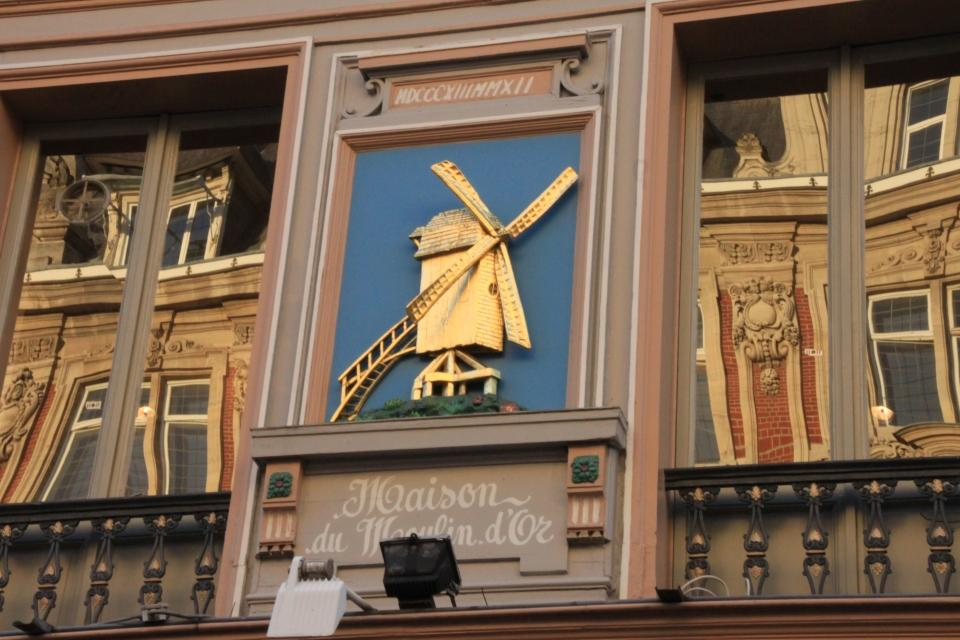 I found it!31 Place du Théâtre
From a corsetry and hosiery shop, this boutique became a café in 2003, named after its owner. The cannonballs on its facade commemorate the victory over Prussian troops.
Discover its historyA man at the café whispers to you: "THEY'RE watching us! The treasure isn't what you think, it's much more precious! Go see the Goddess, she knows where...or rather, WHAT the treasure is!"
Which Goddess could he have been talking about?
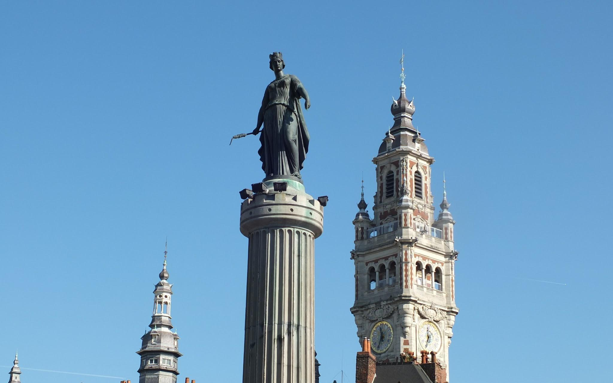 I found it!Place du Général de Gaulle
In 1792, Lille was attacked by the Prussian army, but emerged victorious. This statue commemorates this victory and recalls the promise of the people of Lille facing invaders.
Discover its historyCongratulations!
You've found the treasure of Old Lille: a historic promise! A priceless treasure for the people of Lille.
But one last mystery remains: who are "THEY" that the man at the café was so suspicious of?
Close